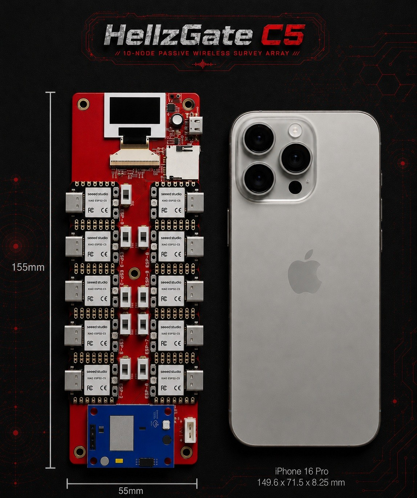
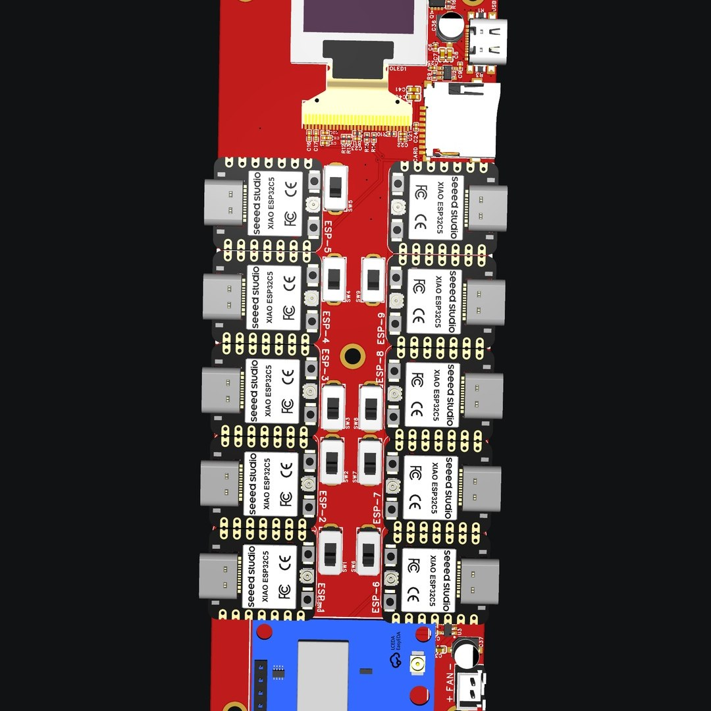
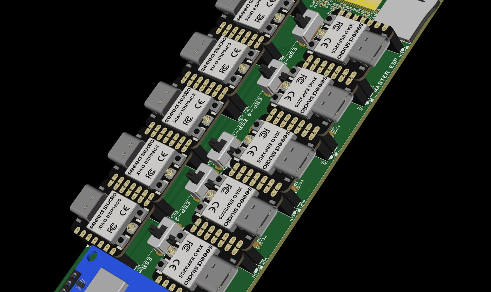
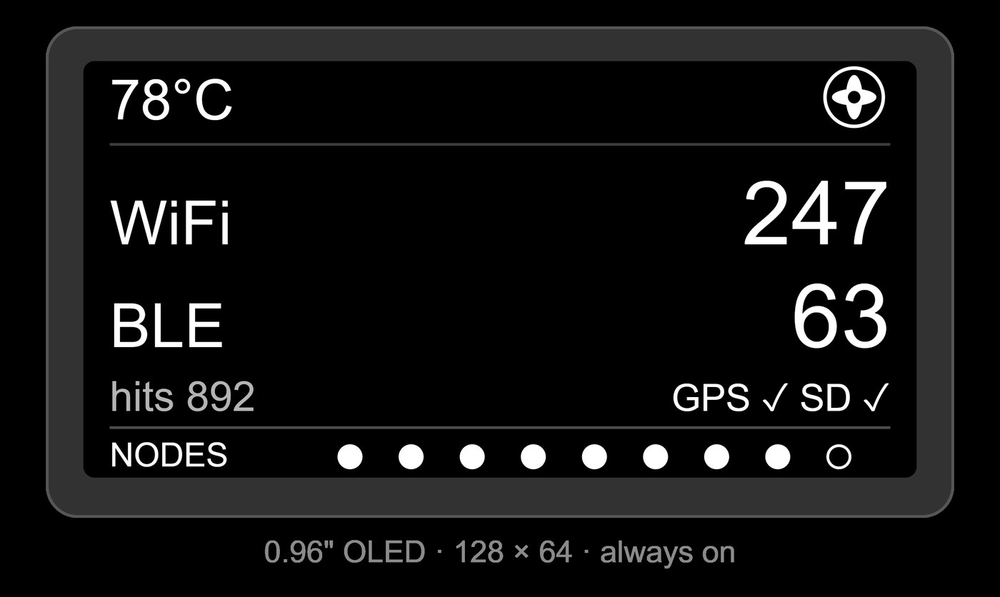

A custom multi-node wireless survey platform I built from a random idea into real hardware. One board, a wall of radios, local logging, GPS ready. No subscriptions. No cloud. Just raw data in your hands.

v1 proved the gate could open. Now the next hardware revision and the companion app are both actively being built — here's where it's headed.
Both are being built in the open — follow along on Discord and watch the gate evolve.
HellzGate C5 is a passive, multi-node wireless survey platform. One master coordinates a cluster of ESP32-C5 scanner nodes that listen across Wi-Fi and Bluetooth, aggregate to the master, geo-tag, and log — all on your own local network. Start with a board's worth and scale the cluster from there. Nothing leaves the device unless you send it.
Single-port. No batteries.
2.4 & 5 GHz.
Bluetooth LE scanning.
Per-record geo-tagging.
A bank per board — and scaling.
The heart of HellzGate C5 is a custom multi-node carrier I designed from scratch in KiCad. It carries a master and a full bank of ESP32-C5 scanner nodes side by side, wires them together on a dedicated backplane, and powers the whole array from a single USB-C port. No rat's nest of jumper wires — just one clean board doing the job it was drawn to do, with room to scale the cluster past a single board.


The first production boards just landed on my bench. HellzGate C5 isn't for sale yet — I'm bringing up hardware, firmware, and the companion app in phases. Builds and availability will follow. Want first word? Get on the list.

HellzGate didn't start in a lab. It started as an itch — I wanted to actually see the wireless world around me, and one little radio was never going to be enough. So I sketched a box full of them and started building. Here's how it went.
What if instead of one radio sniffing the air, I had a whole cluster of them working together — each one on its own channel, all reporting back to one place? One radio shows you a keyhole. I wanted the whole door.
It started as a scribble — a rectangle, a row of little boxes for the nodes, arrows pointing to a "brain," and a screen on the front. That doodle is basically the layout the board still uses today. Sometimes the dumb-looking sketch is the whole plan.
Next came the sprawling prototype — a pile of modules, a spider-web of jumper wires, and way more nodes than any breadboard should hold. Ugly, held together by stubbornness, but it worked. It proved the whole idea: a master herding a bank of nodes really could scan wide and log clean.
I taught myself enough KiCad to turn that rat's nest into a real, custom board — power distribution, the I²C backplane, the node bank, GPS, microSD, and the OLED, all laid out on one carrier. Then I modeled a case around it so the ports, vents, and screen actually lined up.
The first boards are on my bench. Firmware is being written from scratch for this exact hardware — clean-room, purpose-built, nothing borrowed. The companion app is in active development and entering Phase 1. My board, my code, my roadmap — shipped in phases as each piece is ready and right.
v2 hardware is actively in development — embedded GPS, battery + USB-C, digital power control, smaller and field-ready. The companion app is in Phase 1. More nodes, smarter detections, one-tap presets, and clean exports on the way. The gate is only getting sharper — follow every step on Discord.
Boards are here and the build is moving. Drop a line to get on the list for first availability, build updates, and the drop.
Get on the List